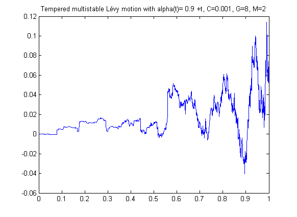

| FRACLAB Functions |
|
Generates a tempered multistable Lévy Motion
tmsm=mst_processes(N,alphat,C,G,M,seed);
tmsm=mst_processes(N,alphat,C,G,M,NaN) Generates the tempered multistable Lévy motion, tmsm, using a sample size, N, a stability function, alphat, a scale parameter, C, a tempering parameter for the negative jumps, G, a tempering parameter for the positive jumps, M, and a random seed, seed. N is a positive integer, alpha is a vector with N samples valued in (0,2), C,G and M are positive reals.
tmsm=mst_processes(N,alphat,C,G,M,seed) Generates the tempered multistable Lévy motion,tmsm, with a specific random seed, seed. This is useful to generate the same path several times or to compare the paths of different multistable tempered processes.
Tempered multistable processes are the multistable extension of tempered processes [4]. See [1] for multistable processes, and [2] for tempered processes. We only simulate here so-called multistable CGMY processes. CGMY processes are introduced in [3]. The synthesis is performed in the Fourier domain. Tempering means that one removes large jumps. This is done independantly for positive and negative jumps. A large G (resp. M) translates into stronger tempering for negative (resp. positive) jumps.
N=2000; t=linspace(0,1,N);
alphat = eval('0.9+1*t');C=0.01;G=8;M=2;
tmsm=mst_processes(N,alphat,C,G,M,NaN);
figure;
plot(t,tmsm);
title('Tempered multistable Lévy motion with
alpha(t)= 0.9 +t, C=0.001, G=8, M=2');

asmlinfrac, asmornhulen, msmlevy, amslevy, CGMY_principal
[1] K. Falconer, J. Lévy Véhel "Multifractional, multistable, and other processes with prescribed local form", Journal of Theoretical Probability, Vol. 22 (2009) 375-401
[2] J. Rosinski, Tempering stable processes, Stochastic Process.
Appl. 117 (2007) 677-707.
[3] Carr, P., Geman, H., Madan, D.,
and Yor, M. (2002). The fine structure of asset returns: an
empirical investigation. Journal of Business 75, 305–332.
[4] J. Lévy Véhel, L. Liu, Multistable tempered processes, preprint.
| |
msmlevy | msmlinmfrac | |